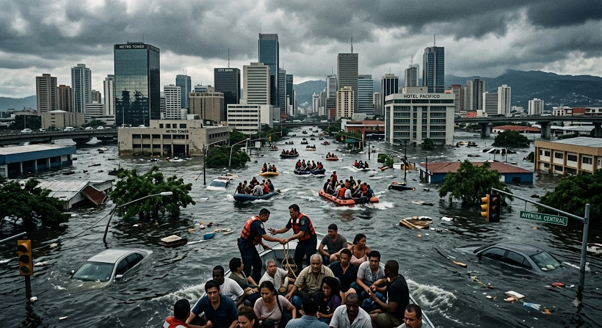

MISSION 03 · VISUAL FORENSICS
Visual District
CASE INTRODUCTION
Two flood images. Two different origins.
One file is a real photograph and the other was generated with artificial intelligence. Inspect both freely, record what you observe, and avoid treating a visual defect as conclusive proof by itself.
Use zoom and drag to explore any area you choose. The mission will not place hotspots for you: deciding where to look is part of the investigation.
STAGE 1 · FREE INSPECTION
Explore both files.
Switch between Image A and Image B. Zoom with the controls or mouse wheel, then drag while enlarged.

STAGE 2 · CLASSIFICATION
Which file was generated with AI?
Base your answer on the complete pattern of evidence, not on one isolated artifact.
STAGE 3 · EVIDENCE STANDARD
What is the most responsible conclusion?
Distorted ticker text, hybrid vehicle shapes, irregular windows, and inconsistent reflections are useful warning signs. They are not a universal AI detector.
MISSION 03 COMPLETE
Visual Evidence Investigator
You compared two files, inspected details independently, identified the AI-generated scene, and distinguished visual clues from confirmed provenance.